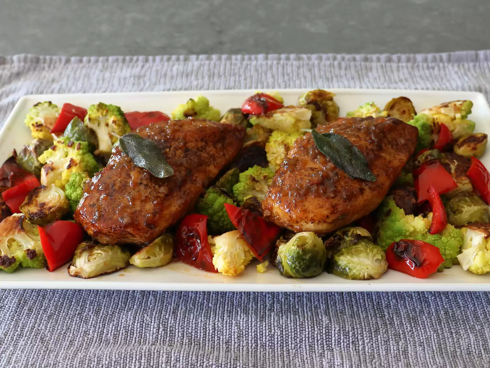

Home
Chef John's Apple Cider Chicken

Chef John from Food Wishes strikes yet again with some damn good chicken. As a self-proclaimed poultry fanatic myself, I've found my standards have remained both consistent and high over the years; not just any chicken will sate me. One needn't worry with this recipe, however. It's easy to make, it's filling, it's unique, and most importantly, it's tasty.
Ingredients
- 2 skinless, boneless chicken breasts
- 1 tsp kosher salt
- 1⁄4 tsp ground black pepper
- 1 pinch cayenne
- 4 tbsp unsalted butter, divided
- 6 sage leaves (optional)
- 2 tbsp minced shallot or onion
- 11⁄4 cups apple cider
- 1⁄3 cup apple cider vinegar
Directions
- Season chicken on both sides with salt, black pepper, and cayenne. Set aside.
- Melt 3 tbsp butter in skillet over med. heat; add sage leaves and fry until crisp, 1-2 minutes. Remove and reserve.
- Add chicken breasts to same skillet, cook until just cooked through - about 4 minutes per side. Remove to plate, cover loosely with foil.
- Add shallots to skillet, sauté for 1 minute. Pour in cider, vinegar, and bring to a simmer over medium-high heat. Cook until half-reduced, then reduce heat to low and place chicken back in, along with accumulated juices from plate. Cook for a few minutes, turning occasionally, basting with the sauce until the chicken is hot. Thermometer should read 165° at center. Add to serving plate.
- Add remaining 1tbsp butter to pan, turn off heat. Swirl until butter emulsifies into the sauce; taste for seasoning and serve on chicken, garnished with fried sage.